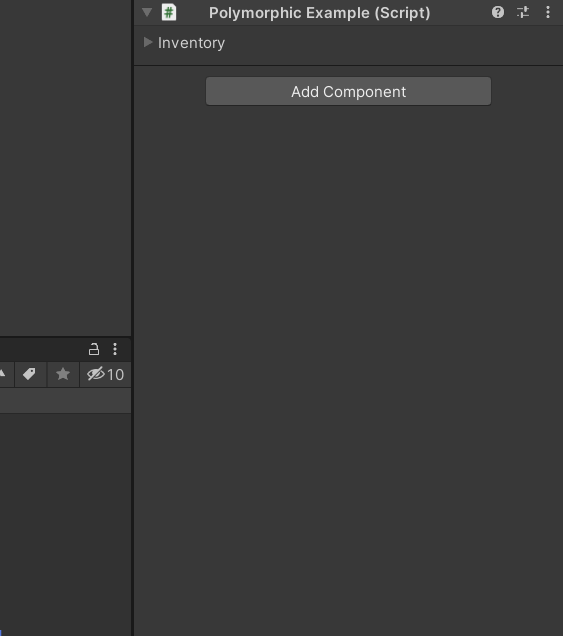

Inspector Gadgets automatically adds various useful functions to the context menu (right click menu) of each field in the Inspector based on its type:
- These functions only support multi-object selection in Inspector Gadgets Pro.
- The fields in the
TransformInspector have functions to snap them to the grid, raycast down and snap to the ground, and rotate to look at another object. - The fields in the
RectTransformInspector have functions to square them (set the height equal to the width or vice versa) and to snap them to the edges of its siblings in a particular direction (Right/Up/Left/Down). - Randomize within common ranges:
- 0-1, 0-100, 0-360, 0-CurrentValue for
float - Random value for
enum - Random
Vector2in a unit circle - Random
Vector3on or in a unit sphere - Random
Quaternion - Random euler angles
- Random hue for
Color
- 0-1, 0-100, 0-360, 0-CurrentValue for
- Convert between degrees and radians for
float. Normalizevectors.Stringconvert to lower or upper case.Logthe current value of the field.Helpfunctions to open the Inspector Gadgets Documentation or do a Google search for the name of the target script.
Set
Number fields have Set commands to assign common values such as 0, Vector3.right, etc.
[SerializeReference] fields also have Set commands to choose their type.
For example, this could allow you to assign any type of Item to an Inventory array:
using System;
using UnityEngine;
public sealed class PolymorphicExample : MonoBehaviour
{
[SerializeReference] private Item[] _Inventory;
}
[Serializable]
public abstract class Item
{
[SerializeField] private string _Name;
[SerializeField] private string _Description;
[SerializeField] private float _Weight;
}
[Serializable]
public class Potion : Item
{
[SerializeField] private int _HealingAmount;
}
[Serializable]
public class Weapon : Item
{
[SerializeField] private int _Damage;
[SerializeField] private float _AttackSpeed;
}
[Serializable]
public class Armour : Item
{
[SerializeField] private int _Defence;
}

Animancer's Polymorphic Drawer system could make it even easier to use (and is included in Animancer Lite).
Reset, Copy, and Paste
All fields have Reset, Copy, and Paste functions in Inspector Gadgets Pro.
- Most types try to
Copythe value to the system clipboard in case you want to paste it into another program such as a text editor. - Basic types can also parse text from the clipboard to
Pastean appropriate value. For example, if you copy(1, 2, 3)from this page you will be able to paste it into any of theTransformfields. Objectreference fields will try to find an object by name using the clipboard text.- All fields have a
Paste (Direct)function which will copy the serialized value directly. Transformfields also have aPaste (Private)function which uses a separate clipboard for each of them so that you can copyPosition,Rotation, andScaleat the same time.CopyandPastefunctions onTransformfields are available in Inspector Gadgets Lite.
New Locked Inspector
This feature is only available in Inspector Gadgets Pro.
The Edit/Selection/New Locked Inspector (Ctrl + Alt + I) menu function item opens a new Inspector window locked to the current selection so you can easily compare and copy values between different objects.
Persist After Play Mode
This feature is only available in Inspector Gadgets Pro.
While in Play Mode, every Component and Inspector field gets a Persist After Play Mode context menu function to allow their values to be retained once you leave Play Mode instead of being reset to their previous value.
The following video shows some physics objects falling onto the environment in Play Mode then this feature is used to keep them in those locations when returning to Edit Mode so that the scene can now start with the objects in their fallen positions without needing to manually position them all in appropriate locations on the ground.

Visualise
For floats and Vectors only. Opens an editor window that displays a gizmo in the scene to visualise and manipulate the chosen field. Vectors are visualised using a position handle with a line leading back to the origin while floats are visualised using the same wireframe sphere used to display the shape of a SphereCollider.


Watch
Opens an editor window that displays a list of all fields you have used the function on so you can view (and edit) them all at the same time. You can use this function on individual fields as well as entire Components.
Inspector Gadgets Lite only allows you to watch up to 3 fields at a time.